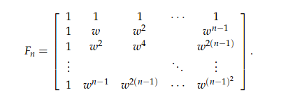

本部分主要研究的是正定，课程包括Lesson25~Lesson28
包括：Symmetric matrices and positive definiteness、Complex matrices and fast Fourier transform、Positive definite matrices and minima、Similar matrices and Jordan form
对称矩阵与正定
对称矩阵的性质
A = AT
性质：
- the eigenvalues are real
- the eigenvector are perpendicular even orthonormal
由此，若A对称，则 A =Q Λ Q−1 = Q Λ QT
why real eigenvalues?
证明思路是从：AX = λX开始，一方面都取共轭，另一方面将原式乘以X的共轭，通过变换，得到λ = λ共轭，得证
Symmetric matrices with real entries have A =AT, real eigenvalues, and perpendicular eigenvectors.
If A has complex entries, then it will have real eigenvalues and perpendicular eigenvectors if and only if
对阵矩阵的解释
A = Q Λ QT
Q = [q1, q2… qn]
展开后得到A = λ1q1q1T + λ2q2q2T +…+ λnqnqnT
由于q正交，所以q1q1T其实是投影矩阵，如此得到，每一个对称阵，其实都是投影的组合。
关于特征值的符号
number of positive pivots = number of positive eigenvalues.
主元的符号与特征值的符号相同
正定的定义
A positive definite matrix is a symmetric matrix A for which all eigenvalues are positive.正定矩阵是所有特征值都是正数的对称矩阵。
=>
- 所有特征值都是正数
- 所有主元都是正数
- 所有的子行列式(11,22..n*n形成的行列式)都是正数
复数矩阵与FFT
复数矩阵的特性
对于复数向量，取转置运算要变成取共轭转置，或者交Hermite，简写H
复向量的长度
内积
yTx => yHx正交
QHQ = I，这时候正交Orthogonal 要用 unitary来表达，单位化。
傅里叶变换
基础形式
复数矩阵形式
n=4例子
FFT
FFT将傅里叶计算从n2 => nlogn
其中,其作用是将奇数行拿到偶数行的前面
正定矩阵性质
最小值
对于正定，除了，特征值>0，主元>0，子行列式>0，还有一个XTAX > 0
如果二次方程一定 > 0，则A正定
由此得出，正定 => 有最小值
首先它是对阵的，Its determinant is positive when the matrix is positive definite
一个多维的向上的碗，而且全是正的加法
if A,B 正定 => A+B正定推论
ATA 一定正定， 这里A是m×n 且 rank(A) = n 的矩阵
应为其多项式：
相似矩阵与Jordan式
定义
对于A，B两个矩阵，若A = M-1BM，则A、B相似性质
相似矩阵，拥有相同的特征值，相同数量的独立特征向量（一般不同）重特征值问题
以λ1 = λ2 = 4 为例
可以分成两个famliy:- ,这一族比较大
- ，这一族只有这一个矩阵，因为它与任何M相乘都会返回自身
Jordan matrix
简单的说，对于重特征值问题，它们需要有相同的Jordan blocks的形式.
其中，这里，对角线上都是特征值，下方都是0，上方跟随一层1.
这样，不同的特征值情况可以认为是一种特殊的Jordan Matrix，它们的Jordan Block都是为1*1的特征值本身